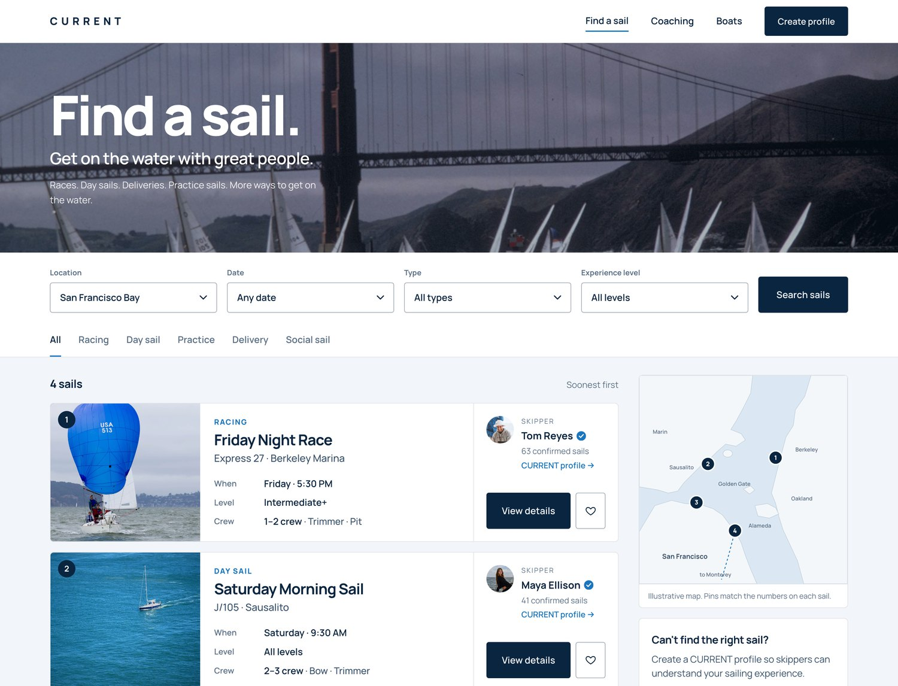
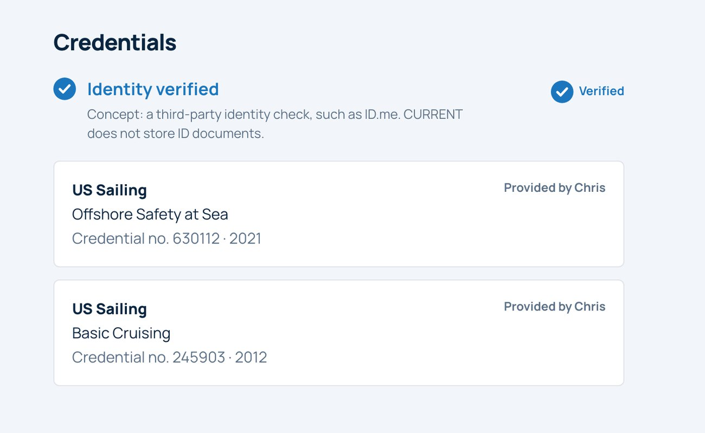
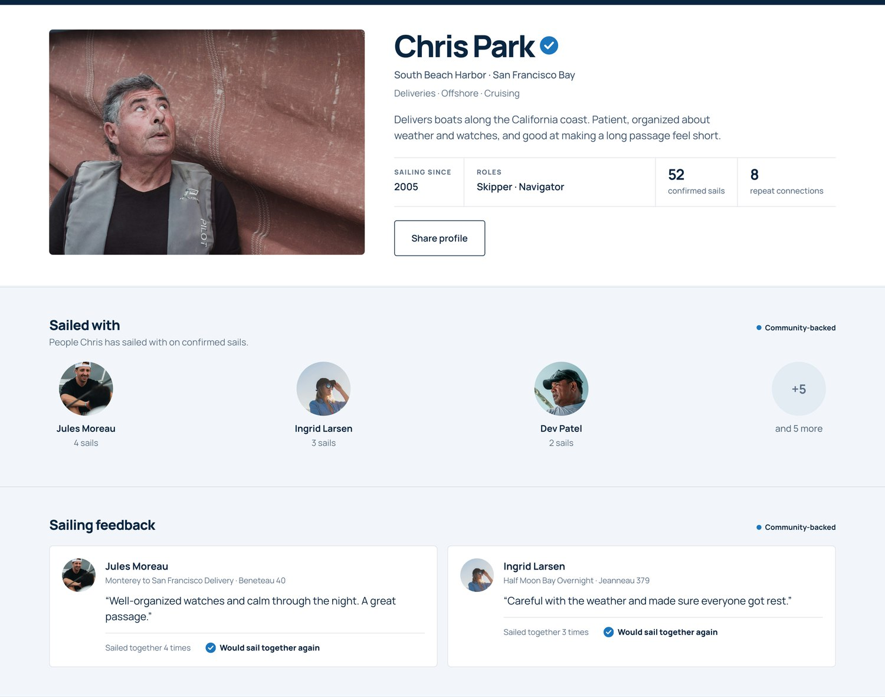

CURRENT
More ways to get on the water.
A sailing platform for finding people to sail with and building a trusted sailing history, with coaching and boat access next.
Explore the conceptYou can find someone to sail with.
But can you trust who you’re getting on a boat with?
Sailing often starts with people you have never met. The information you need to understand who you’re sailing with can be scattered across conversations, certifications, personal references and self-reported experience.
Identity
Are they who they say they are?
Experience
What have they actually sailed?
Credentials
What qualifications can they substantiate?
History
Who have they sailed with before?
Reputation
Would those people sail with them again?
The same trust question. Two sides.
Sailor
Who am I getting on a boat with?
- What is the skipper’s experience?
- Who else has sailed with them?
- Is this opportunity right for my experience level?
Skipper / Boat owner
Who am I bringing onto my boat?
- What have they sailed?
- What positions can they crew?
- Do they have relevant credentials?
- Who have they sailed with before?
CURRENT brings the context together.
Find opportunities, verify your identity and credentials, and build a trusted sailing history, all in one place.

Find a sail
Browse opportunities by location, date, type and experience level.

Create your profile
Verify your identity, add credentials and share your sailing experience.

Your CURRENT profile
Build sailing history through confirmed sails, connections and feedback.
ID.me and credential verification are proposed integrations for this concept.
More ways to get on the water.
The problem started with trust. The opportunity became access.
Sailors
NowSailors + opportunities
Coaches
NextCoaching
Sailboats
NextBoat access
A web prototype today.
An app tomorrow.